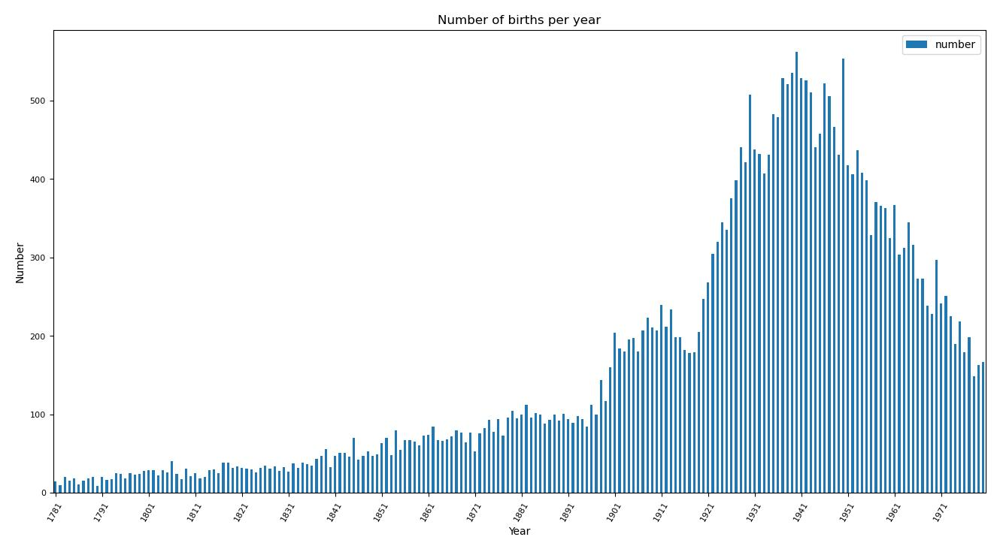
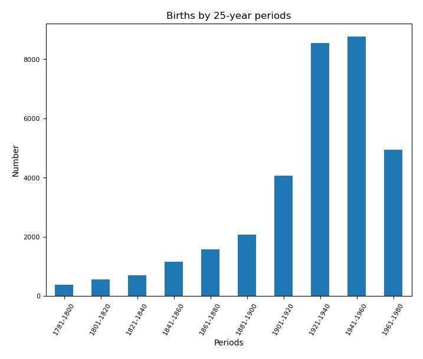

Distribution of births by year
First, we grouped the births by year and created a bar plot to represent them, having dealt with the missing
years.

Distribution of births by 25-years periods
We then grouped the births into 25-year periods to provide a more consistent representation of the
evolution. We observed that births doubled in the 1921–1940 period compared to the previous period, which
could be explained by a greater interest in physics in the same countries or the geographic spread of
physics. The 'encyclopedic bias' should not be overlooked, and a deeper analysis of the information
available on Wikidata would be required. This bias probably explains the smaller growth between 1941 and
1960, and the decrease in the final period, which is also visible in the yearly distribution.

Distribution of imputed activity periods by 10-years time-span with the proportion of genders
Finally, we decided to use the birth years to create imputed 10-year activity periods (birth year + 45),
which allow us to more clearly inspect the trend and observe the periods during which more people were
active. We also added the proportion of genders in each period, showing a growing proportion of women in
the field, reaching 20% of active individuals in the final period.